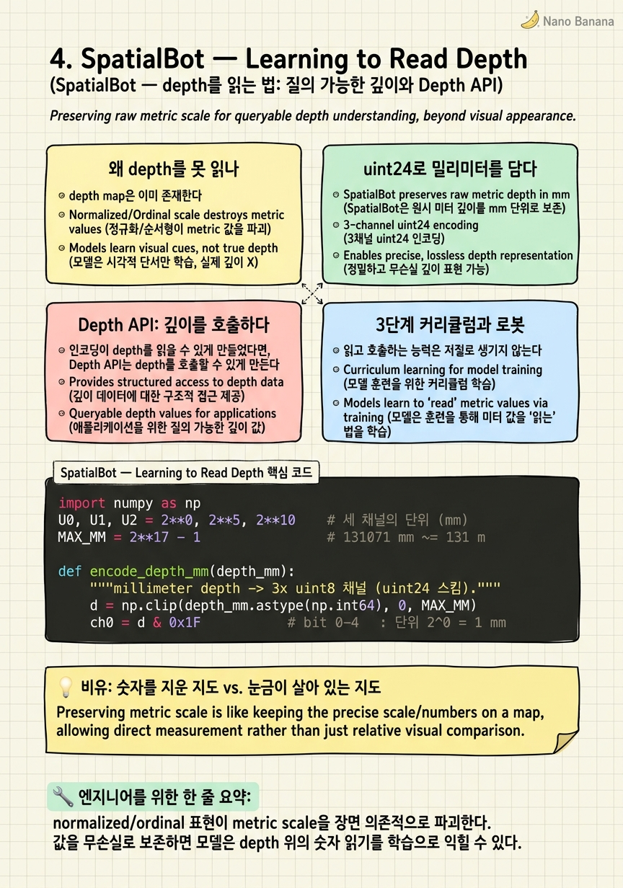

SpatialBot — Learning to Read Depth
depth map은 처음부터 VLM 앞에 놓여 있었다. 모델은 그 위의 숫자를 읽는 법을 한 번도 배우지 못했을 뿐이다. SpatialBot의 주장은 도발적일 만큼 단순하다. depth를 새 feature로 녹여 넣기 전에, 먼저 그것을 읽을 수 있는 map으로 다뤄야 한다는 것이다.

🎯 학습 목표
- normalized/ordinal depth가 왜 metric scale을 파괴하는지, 그리고 그것이 indoor-mm 대 outdoor-range 문제로 어떻게 드러나는지 설명한다.
- millimeter depth를 세 개의 uint8 채널에 담는 uint24 power-of-two 인코딩을 직접 pack/unpack하고 lossless 복원을 검증한다.
- Depth API가 어떻게 depth를 passive channel에서 callable tool로 바꾸는지, 그 agentic lookup 루프를 sequence로 그린다.
- SpatialQA의 low/middle/high 커리큘럼과 RT-X manipulation에서의 embodied payoff를 연결해, SpatialBot이 로봇 갈래로 이어지는 이유를 논증한다.
3장의 SpatialRGPT는 depth를 encoder 안으로 녹여 넣었다. depth estimator의 feature를 vision backbone에 fuse해서, 모델이 geometry를 semantic feature와 함께 흡수하도록 만든 방식이다. 이 접근은 강력하지만 한 가지를 포기한다. depth가 모델 내부에서 feature로 흩어지는 순간, 그 위의 개별 숫자를 다시 정확히 읽어낼 방법이 사라진다.
SpatialBot은 반대 방향을 택한다. Wenxiao Cai 등(BAAI/PKU/Oxford)이 제안한 이 모델은 ICRA 2025로 발표된 것으로 알려지며, depth를 feature로 녹이는 대신 읽을 수 있는 map으로, 나아가 호출할 수 있는 tool로 유지한다. RGB와 depth를 둘 다 image encoder와 multimodal projector에 통과시키되, depth의 실제 millimeter 값이 파괴되지 않도록 보존한다. 그리고 모델이 특정 픽셀의 정밀한 깊이가 필요하다고 판단하면, Depth(point)를 발화해 API로부터 참값을 되받는다.
이 장은 세 가지를 관통한다. 첫째, 왜 기존 depth 표현이 읽히지 않는가. 둘째, millimeter를 손실 없이 담는 uint24 인코딩은 무엇을 해결하는가. 셋째, Depth API라는 도구 호출 루프가 왜 embodied·agentic 계보의 출발점이 되는가. SpatialBot은 정지 이미지 위의 데이터 레시피(2장)와 region grounding(3장)을 로봇의 손끝으로 끌고 나가는 다리다.
핵심 내용
왜 depth를 못 읽나
depth map은 이미 존재한다. RGB-D 센서, stereo, monocular estimator 어디서든 픽셀마다 거리 값을 뱉는다. 그런데 이 map을 그대로 VLM에 넣어도 모델은 "이 지점이 몇 mm인가"를 답하지 못한다. 이유는 입력 파이프라인이 그 숫자를 이미 지워버렸기 때문이다.
전형적인 실패는 normalization에서 온다. depth를 \([0, 1]\)로 min-max 정규화해 8-bit 그레이스케일로 저장하는 순간, 값 \(v\)는 \(v = (d - d_{min})/(d_{max} - d_{min})\)가 되고 \(d_{min}, d_{max}\)는 장면마다 다르다. 같은 픽셀 값 \(0.5\)가 실내 장면에서는 1.2m를, 실외 장면에서는 40m를 의미한다. metric scale이 장면 의존적으로 붕괴하는 것이다. ordinal(순서만 보존) 표현도 마찬가지다. "A가 B보다 가깝다"는 유지되지만 "A는 850mm"는 복원 불가다.
이것을 dynamic-range 문제로 정리할 수 있다. 실내 조작(manipulation)은 mm 단위 정밀도를 요구한다. 컵의 손잡이가 5mm 더 가까운지가 grasp 성공을 가른다. 반대로 실외 내비게이션은 100m 단위를 다뤄야 한다. 단일 8-bit 채널의 256 레벨로 이 두 요구를 동시에 만족시킬 수 없다. mm 정밀도를 주면 최대 거리가 25.6cm에서 끊기고, 100m 범위를 담으면 한 레벨이 약 40cm가 되어 실내 정밀도가 사라진다.
\[\text{요구: } \underbrace{\sim 1\,\text{mm}}_{\text{indoor precision}} \quad\text{동시에}\quad \underbrace{\gtrsim 100\,\text{m}}_{\text{outdoor range}}, \qquad \frac{100{,}000\,\text{mm}}{1\,\text{mm}} = 10^5 \gg 256\]
SpatialBot의 진단은 여기서 나온다. depth가 안 읽히는 것은 모델의 무능이 아니라 표현의 손실이다. 값을 살려주면, 모델은 그 위의 숫자를 읽는 것을 학습으로 익힐 수 있다. 그러므로 먼저 풀어야 할 것은 아키텍처가 아니라 인코딩이다.
uint24로 밀리미터를 담다
SpatialBot은 raw metric depth를 millimeter 단위 그대로 보존한다. 이를 위해 depth 값을 세 개의 uint8 채널에 나눠 담는 uint24 스킴을 쓴다. 세 채널은 각각 서로 다른 power-of-two 단위(\(2^0\), \(2^5\), \(2^{10}\) mm)를 담당해, 하나의 픽셀이 마치 RGB처럼 3채널 이미지가 되도록 만든다. 이 배치 덕분에 depth map은 기존 vision encoder(SigLIP)의 3채널 입력 규격에 그대로 흘러들어간다.
세 채널이 나눠 갖는 자릿수와 단위는 다음과 같다.
| 채널 | 단위 (mm) | 담당 비트 | 값 범위 | 역할 |
|---|---|---|---|---|
| ch0 (fine) | \(2^0 = 1\) | bit 0–4 | 0–31 | 1mm 정밀도 |
| ch1 (mid) | \(2^5 = 32\) | bit 5–9 | 0–992 | cm~dm 스케일 |
| ch2 (coarse) | \(2^{10} = 1024\) | bit 10–16 | 0–130048 | m 스케일 |
복원은 세 채널의 가중합이다. 픽셀의 실제 깊이 \(d\)는 채널 값 \(c_0, c_1, c_2\)로부터
\[d \;=\; c_0 \cdot 2^0 \;+\; c_1 \cdot 2^5 \;+\; c_2 \cdot 2^{10} \quad [\text{mm}]\]
로 정확히 복원된다. 총 17비트가 실효 표현이며 최대값은 \(2^{17}-1 = 131{,}071\) mm, 즉 약 131m다. 실내 mm 정밀도와 실외 100m급 범위를 하나의 표현이 동시에 만족한다. 앞 절의 dynamic-range 딜레마가 사라지는 지점이다.
중요한 성질은 무손실이다. normalized depth와 달리 이 인코딩은 pack→unpack이 완전 가역이라, 모델이 채널 위의 숫자를 읽어 원래 metric 값을 되찾을 수 있다. depth가 처음으로 "읽을 수 있는 map"이 되는 것이다. 코드 예제에서 이 pack/unpack을 직접 구현하고 lossless 복원을 검증한다.
입력 아키텍처 자체는 절제되어 있다. RGB와 (선택적) depth 두 map이 각각 SigLIP vision encoder(@384×384)와 multimodal projector를 지나 토큰이 되고, base LLM으로 들어간다. SpatialBot은 Bunny VLM 계열 위에 세워졌고, base LLM으로 Phi-2(3B)/Phi-3(4B)/Qwen-1.5(4B)/Llama-3(8B)를 두루 시험했으며 LoRA로 fine-tuning한다. depth를 특별한 head로 처리하는 대신, 읽을 수 있게 인코딩한 뒤 기존 경로로 흘리는 것이 설계 철학이다.
Depth API: 깊이를 호출하다
인코딩이 depth를 읽을 수 있게 만들었다면, Depth API는 depth를 호출할 수 있게 만든다. 이것이 SpatialBot의 서명과도 같은 기여다.
메커니즘은 이렇다. 모델이 답을 생성하다가 특정 픽셀의 정밀한 깊이가 필요하다고 판단하면, 자유 서술 대신 Depth(point) 형태의 호출을 발화한다. 그러면 외부 API가 그 픽셀 위치의 참(true) metric depth를 depth map에서 조회해 값을 되돌려주고, 모델은 이 값을 컨텍스트에 받아 답을 정련한다. depth가 passive channel이 아니라 callable tool이 되는 순간이다.
이 loop는 학습 중 선택적으로 적용된다. 모든 질문이 정밀 조회를 요구하지는 않기 때문이다. 두 물체의 대략적 원근 비교는 encoder를 통과한 depth map만으로 충분하지만, "이 지점이 정확히 몇 mm인가" 또는 mm 단위 차이가 결과를 가르는 manipulation류 질문에서는 API 조회가 오차를 크게 줄인다. 모델은 언제 도구를 부를지를 데이터로 배운다.
왜 인코딩만으로 부족한가. encoder를 지난 depth는 patch 토큰으로 압축·양자화되어 픽셀 단위 정밀도가 일부 흐려진다. Depth API는 이 손실을 우회한다. 조회 시점에 원본 map에서 참값을 직접 읽으므로, 토큰화된 근사가 아니라 ground-truth 숫자가 답변에 들어간다. read(인코딩)와 call(API)은 상호보완적이다. 하나는 전역적 맥락을, 다른 하나는 국소적 정밀도를 담당한다.
이 도구 호출 loop는 이 코스의 계보에서 중요한 분기점이다. 3장 SpatialRGPT가 depth를 feature로 fuse했다면, SpatialBot은 depth를 explicit map + tool-call로 유지한다. 후자는 자연스럽게 tool-augmented·agentic spatial VLM으로 이어지고, 이후 장들에서 다룰 depth-native·verifiable-reward 계열의 embodied 갈래를 예고한다.
3단계 커리큘럼과 로봇
읽고 호출하는 능력은 저절로 생기지 않는다. SpatialBot은 SpatialQA라는 데이터셋을 low→middle→high 3단계 커리큘럼으로 구성해, 능력을 아래에서 위로 쌓아 올린다.
| 레벨 | 배우는 것 | 예시 과제 |
|---|---|---|
| Low | depth 값 읽기 | pixel→depth 매핑, 특정 지점의 깊이 조회 |
| Middle | RGB–depth 정렬 | min/max/mean/center depth로 proximity 판단 |
| High | 고차 공간 추론 | counting, spatial relations, manipulation |
데이터 출처는 COCO, Visual Genome, 그리고 Open X-Embodiment(RT-X)다. RGB만 있는 이미지에는 ZoeDepth로 depth를 생성해 붙인다. low 레벨이 "숫자를 읽는" 기초 감각을 심고, middle이 RGB의 semantic과 depth의 geometry를 정렬시키며, high가 그 위에서 세기·관계·조작 같은 실전 능력을 얹는 구조다.
성능은 이 설계가 작동함을 보인다. SpatialBench에서 depth estimation 93–95%, proximity 77–91%, counting 약 89–94%를 기록한다. 주목할 점은 일반 능력이 희생되지 않았다는 것이다. depth를 읽게 만들었는데도 general MME perception이 1376에서 1551로 올랐고, GQA도 62%에서 63%로 개선됐다. 공간 특화가 일반 시지각을 깎지 않았다.
embodied payoff가 이 장의 결승선이다. RT-X manipulation에서 depth 이해는 RGB-only 대비 robot action prediction을 향상시킨다. 정지 이미지 위의 데이터 레시피(2장)와 region grounding(3장)이 여기서 로봇의 손끝으로 이어진다. depth를 읽고 호출하는 능력이 실제 조작 성능으로 환산되는 것, 이것이 SpatialBot이 embodied 계보의 출발점으로 자리하는 이유다.
💡 비유로 이해하기
normalized depth를 넣는 것은 등고선의 높이 숫자를 지운 지형도를 주는 것과 같다. 어느 봉우리가 더 높은지는 색의 농담으로 짐작할 수 있지만, "이 지점의 고도는 몇 m인가"는 답할 수 없다. 색은 지도마다 기준이 달라, 같은 회색이 어떤 지도에선 언덕을 어떤 지도에선 산맥을 뜻한다. 이것이 metric scale의 장면 의존적 붕괴다.
uint24 인코딩은 등고선마다 실제 고도 숫자를 다시 인쇄한 지도다. 1m 단위의 미세한 눈금과 1000m 단위의 굵은 눈금을 한 지도에 겹쳐 찍어, 마당의 턱과 먼 산을 같은 종이 위에서 정확히 읽게 한다. Depth API는 여기에 측량 기사를 붙이는 것이다. 지도만으로 애매한 한 지점이 있으면, 기사를 그 자리로 보내 실측값을 받아온다. 지도는 전체 지형의 맥락을, 측량 기사는 한 점의 정밀도를 책임진다.
💻 코드 예시
SpatialBot의 uint24 depth 인코딩을 직접 구현한다. millimeter depth 배열을 세 개의 uint8 채널(\(2^0\), \(2^5\), \(2^{10}\) mm 단위)로 pack하고 다시 unpack해, metric 값이 무손실로 복원됨을 확인한다. 실내 mm부터 실외 131m까지 하나의 표현이 커버한다.
import numpy as np
U0, U1, U2 = 2**0, 2**5, 2**10 # 세 채널의 단위 (mm)
MAX_MM = 2**17 - 1 # 131071 mm ~= 131 m
def encode_depth_mm(depth_mm):
"""millimeter depth -> 3x uint8 채널 (uint24 스킴)."""
d = np.clip(depth_mm.astype(np.int64), 0, MAX_MM)
ch0 = d & 0x1F # bit 0-4 : 단위 2^0 = 1 mm
ch1 = (d >> 5) & 0x1F # bit 5-9 : 단위 2^5 = 32 mm
ch2 = (d >> 10) & 0x7F # bit 10-16 : 단위 2^10 = 1024 mm
return np.stack([ch0, ch1, ch2], axis=-1).astype(np.uint8)
def decode_depth_mm(enc):
"""3x uint8 채널 -> millimeter depth (가중합 복원)."""
ch0 = enc[..., 0].astype(np.int64)
ch1 = enc[..., 1].astype(np.int64)
ch2 = enc[..., 2].astype(np.int64)
return ch0 * U0 + ch1 * U1 + ch2 * U2
# 실내 mm 정밀도부터 실외 131m 범위까지
depth = np.array([1, 850, 2500, 65535, 131071], dtype=np.int64)
enc = encode_depth_mm(depth)
dec = decode_depth_mm(enc)
print("in (mm):", depth)
print("3xuint8 :\n", enc)
print("out (mm):", dec)
print("lossless:", np.array_equal(depth, dec))
print("max range (m):", MAX_MM / 1000)
# normalized 8-bit와의 대비: min-max 정규화는 scale을 파괴한다
norm = ((depth - depth.min()) / (depth.max() - depth.min()) * 255).astype(np.uint8)
recovered = norm.astype(np.float64) / 255 * (depth.max() - depth.min()) + depth.min()
print("normalized 복원 오차(mm):", np.abs(recovered - depth).astype(int))encode는 clip으로 범위를 [0, 131071]mm로 묶은 뒤, 비트 시프트와 마스크로 depth를 세 자리로 쪼갠다. ch0는 하위 5비트(1mm 단위), ch1은 그다음 5비트(32mm 단위), ch2는 상위 7비트(1024mm 단위)를 담아 총 17비트를 표현한다. decode는 각 채널에 자기 단위를 곱해 더하는 가중합으로 원래 mm를 복원한다. 출력의 lossless=True가 pack→unpack이 완전 가역임을 보이고, max range=131.071m가 실내 mm 정밀도와 실외 100m급 범위를 하나의 표현이 동시에 만족함을 확인시킨다. 마지막 블록은 대조군이다. min-max 정규화 후 8-bit로 저장하면 한 레벨이 수백 mm를 뭉개, 같은 depth를 되돌렸을 때 큰 복원 오차가 남는다. 바로 이 손실이 모델이 depth를 못 읽게 만든 원인이다.
🏭 현업에서의 평가
✅ 시니어가 보는 것
- normalized/ordinal depth가 metric scale을 파괴하는 이유를 dynamic-range 관점($10^5 \gg 256$)에서 정량적으로 설명하는가.
- uint24 3채널 인코딩이 왜 lossless이며 기존 3채널 vision encoder에 무리 없이 흘러드는지, trade-off까지 짚는가.
- Depth API를 passive channel과 대비해 '언제 도구를 부르는가'라는 학습 문제로 프레이밍하고, encoder 토큰화 손실을 우회하는 이점을 아는가.
- SpatialQA 커리큘럼과 RT-X manipulation payoff를 연결해, 이 설계가 embodied 성능으로 환산되는 인과를 설명하는가.
⚠️ 레드 플래그
- "depth를 넣으면 모델이 알아서 읽는다"고 말하며 인코딩/정규화 손실 문제를 인지하지 못함.
- Depth API를 단순 후처리로 오해하고, 도구 호출을 학습 중 선택적으로 다룬다는 점을 놓침.
- 3장 SpatialRGPT의 feature-fusion과 SpatialBot의 explicit-map+tool 접근 차이를 구분하지 못함.
- 성능 수치를 depth 특화가 일반 능력(MME/GQA)을 깎지 않았다는 맥락 없이 나열만 함.
🎤 예상 인터뷰 질문 (클릭하면 모범답안)
normalized 8-bit depth를 그대로 VLM에 넣으면 왜 모델이 metric 질문에 답하지 못하는가?
min-max 정규화는 픽셀 값을 \([0,1]\)로 압축하는데 \(d_{min}, d_{max}\)가 장면마다 달라, 같은 값이 실내에선 수 미터를 실외에선 수십 미터를 뜻하게 되어 metric scale이 장면 의존적으로 붕괴합니다. 단일 8-bit 채널의 256 레벨로는 실내 mm 정밀도와 실외 100m 범위를 동시에 담을 수 없어 dynamic range가 근본적으로 부족합니다. 따라서 모델의 무능이 아니라 입력 표현이 이미 metric 정보를 지운 것이고, 값을 무손실로 보존해야 읽는 것을 학습할 수 있습니다.
SpatialBot의 uint24 인코딩은 구체적으로 어떻게 mm 정밀도와 100m 범위를 동시에 만족하는가?
millimeter depth를 세 uint8 채널에 나눠, 각 채널이 \(2^0\), \(2^5\), \(2^{10}\) mm 단위를 담당하도록 비트 시프트로 pack합니다. 복원은 \(d = c_0\cdot2^0 + c_1\cdot2^5 + c_2\cdot2^{10}\)의 가중합이며 총 17비트로 최대 약 131m를 표현하면서 하위 채널이 1mm 정밀도를 유지합니다. pack/unpack이 완전 가역이라 무손실이고, 3채널이라 SigLIP 같은 기존 RGB용 encoder에 그대로 흘러들어갑니다.
depth를 encoder feature로 fuse하는 대신 Depth API로 호출하게 하는 것의 이점은 무엇인가?
encoder를 지난 depth는 patch 토큰으로 압축·양자화되어 픽셀 단위 정밀도가 흐려지는데, Depth API는 조회 시점에 원본 map에서 참 metric 값을 직접 읽어 이 손실을 우회합니다. 덕분에 mm 차이가 결과를 가르는 manipulation류 질문에서 ground-truth 숫자가 답에 들어가 오차가 줄어듭니다. 인코딩된 map은 전역 맥락을, API 조회는 국소 정밀도를 담당해 상호보완적이며, 모델은 언제 도구를 호출할지를 학습으로 익혀 tool-augmented·agentic 계보로 이어집니다.
✨ 핵심 요약
depth는 무능이 아니라 손실 때문에 안 읽힌다
normalized/ordinal 표현이 metric scale을 장면 의존적으로 파괴한다. 값을 무손실로 보존하면 모델은 depth 위의 숫자 읽기를 학습으로 익힐 수 있다.
uint24가 dynamic-range 딜레마를 푼다
세 uint8 채널이 $2^0$, $2^5$, $2^{10}$ mm 단위를 나눠 담아, 실내 1mm 정밀도와 실외 약 131m 범위를 하나의 무손실 표현으로 동시에 만족한다.
3채널이라 기존 encoder에 그대로 흐른다
depth를 RGB처럼 3채널 이미지로 인코딩하므로 SigLIP(@384×384)과 projector를 특별한 head 없이 통과한다. 설계의 절제가 곧 강점이다.
Depth API는 depth를 callable tool로 만든다
모델이 `Depth(point)`를 발화하면 API가 원본 map에서 참값을 조회해 되돌려주고 답을 정련한다. encoder 토큰화 손실을 우회하는 국소 정밀도 경로다.
언제 부를지를 학습한다
도구 호출은 학습 중 선택적으로 적용된다. 대략적 원근 비교는 map으로 충분하고, mm 정밀 질문에서만 API를 호출하도록 모델이 데이터로 익힌다.
커리큘럼이 능력을 쌓아 올린다
SpatialQA는 low(값 읽기)→middle(RGB–depth 정렬)→high(counting·relations·manipulation)로 구성되며, RGB-only 이미지엔 ZoeDepth로 depth를 붙인다.
공간 특화가 일반 능력을 깎지 않았다
SpatialBench에서 depth estimation 93–95%, proximity 77–91%, counting 약 89–94%를 얻으면서도 MME perception 1376→1551, GQA 62→63%로 일반 시지각이 함께 개선됐다.
embodied payoff가 결승선이다
RT-X manipulation에서 depth 이해가 RGB-only 대비 robot action prediction을 향상시킨다. SpatialBot은 정지 이미지 레시피를 로봇의 손끝으로 잇는 다리다.